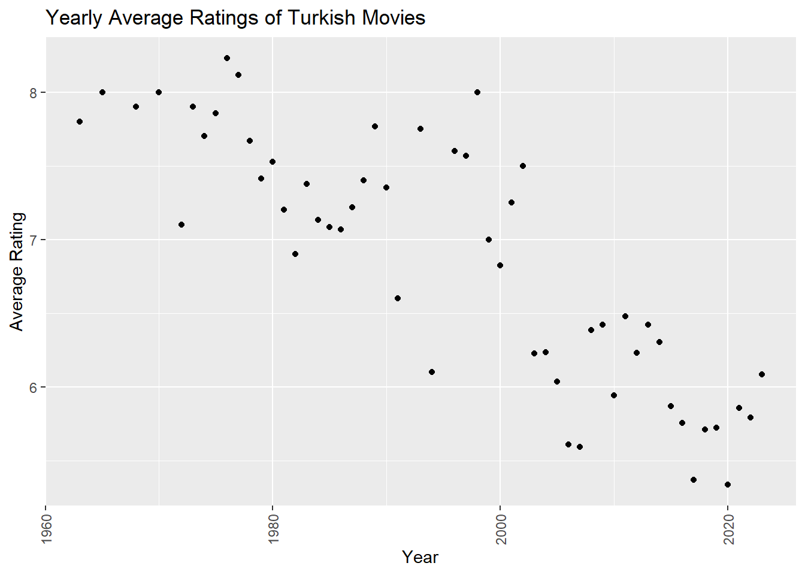

suppressMessages(library(tidyverse)) # for everything :)
suppressMessages(library(rvest)) # for HTML scraping
suppressMessages(library(stringr)) # for string processing
url_1 <- "https://m.imdb.com/search/title/?title_type=feature&release_date=2010-01-01,2024-01-01&sort=release_date,desc&num_votes=2498,&country_of_origin=TR&count=250"
url_2 <- "https://m.imdb.com/search/title/?title_type=feature&release_date=,2010-01-01&sort=release_date,desc&num_votes=2498,&country_of_origin=TR&count=250"
data_html_1 <- read_html(url_1)
data_html_2 <- read_html(url_2)Assignment 2
Hello!
If you are not Erdi Dasdemir and you are here, you are probably looking for information about the assignmenr. I would be happy if you could send me your suggestions for my homework. If you need help, you can reach me via Slack. I would be happy if you use my assignment as a helpful reference.
1. Importing Data to RStudio
Firstly,I called the libraries I needed by typing them at the beginning of my code. Then, I import data to R. Since I could not pull all the data at once, I divided the data into two according to dates.
2. Start web scrapping to create a Data Frame with columns: Title, Year, Duration,Rating, Votes
title_names_1 <-html_nodes(data_html_1,'.ipc-title__text')
title_names_1 <- html_text(title_names_1)
title_names_1 <- tail(head(title_names_1,-1),-1)
title_names_1 <- str_split(title_names_1, " ", n=2)
title_names_1 <- unlist(lapply(title_names_1, function(x) {x[2]}))
title_names_2 <-html_nodes(data_html_2,'.ipc-title__text')
title_names_2 <- html_text(title_names_2)
title_names_2 <- tail(head(title_names_2,-1),-1)
title_names_2 <- str_split(title_names_2, " ", n=2)
title_names_2 <- unlist(lapply(title_names_2, function(x) {x[2]}))
titles<-c(title_names_1,title_names_2)
year_1 <- html_elements(data_html_1,'.dli-title-metadata > span:nth-child(1)')
year_1 <- html_text(year_1)
year_2 <- html_elements(data_html_2,'.dli-title-metadata > span:nth-child(1)')
year_2 <- html_text(year_2)
year <- as.numeric(c(year_1,year_2))
duration_1 <- html_elements(data_html_1,'.dli-title-metadata > span:nth-child(2)')
duration_1 <- html_text(duration_1)
duration_2 <- html_elements(data_html_2,'.dli-title-metadata > span:nth-child(2)')
duration_2 <- html_text(duration_2)
durations <- c(duration_1,duration_2)
rating_1 <- html_elements(data_html_1,'.ipc-rating-star--imdb')
rating_1 <- html_text(rating_1)
cleaned_rating_1 <- gsub("[^0-9]", "", rating_1)
first_two_digits_1 <- substr(cleaned_rating_1, 1, 2)
numeric_rating_1 <-as.numeric(first_two_digits_1)/10
rating_2 <- html_elements(data_html_2,'.ipc-rating-star--imdb')
rating_2 <- html_text(rating_2)
cleaned_rating_2 <- gsub("[^0-9]", "", rating_2)
first_two_digits_2 <- substr(cleaned_rating_2, 1, 2)
numeric_rating_2 <-as.numeric(first_two_digits_2)/10
rating <- c(numeric_rating_1, numeric_rating_2)
vote_1 <- html_elements(data_html_1,'.kRnqtn')
vote_1 <- html_text(vote_1)
cleaned_vote_1 <- gsub("[^0-9]", "", vote_1)
numeric_vote_1 <- as.numeric(gsub(",", "", cleaned_vote_1))
vote_2 <- html_elements(data_html_2,'.kRnqtn')
vote_2 <- html_text(vote_2)
cleaned_vote_2 <- gsub("[^0-9]", "", vote_2)
numeric_vote_2 <- as.numeric(gsub(",", "", cleaned_vote_2))
votes <- c(numeric_vote_1,numeric_vote_2)
suppressWarnings(hours <- ifelse(is.na(as.numeric(sub("h.*", "",durations))),0,as.numeric(sub("h.*", "",durations))))
minutes <- sub(".*\\s(\\d+)m", "\\1", durations)
minutes<-ifelse(grepl("h", minutes),0,minutes)
minutes<-ifelse(grepl("m",minutes),gsub("m", "", minutes),minutes)
minutes <- as.numeric(minutes)
duration_min <-60*hours+minutes
imdb_data_frame <- data.frame(Title=titles,Year=year,Duration=durations, Rating=rating, Votes=votes, DurationMin = duration_min)To create a data frame, I separated and combined the headers from each of the URLs I took separately and finally created a data frame by combining all the headers.
3. Exploratory Data Analysis
a) The 5 best and worst movies according to rating
index <- order(imdb_data_frame$Rating,decreasing = TRUE )
top_5 <- head(index,5)
imdb_data_frame[top_5[1:5],] Title Year Duration Rating Votes DurationMin
457 Hababam Sinifi 1975 1h 27m 9.2 42513 87
202 CM101MMXI Fundamentals 2013 2h 19m 9.1 46995 139
446 Tosun Pasa 1976 1h 30m 8.9 24327 90
453 Hababam Sinifi Sinifta Kaldi 1975 1h 35m 8.9 24370 95
452 Süt Kardesler 1976 1h 20m 8.8 20886 80index_1 <- order(imdb_data_frame$Rating)
bottom_5 <- head(index_1,5)
imdb_data_frame[bottom_5[1:5],] Title Year Duration Rating Votes DurationMin
100 Cumali Ceber: Allah Seni Alsin 2017 1h 40m 1.0 39267 100
110 Reis 2017 1h 48m 1.0 73973 108
21 Müjde 2022 48m 1.2 9920 48
28 15/07 Safak Vakti 2021 1h 35m 1.2 20607 95
75 Cumali Ceber 2 2018 1h 40m 1.2 10228 100For the last 5, I would like it to be in the Recep Ivedik series, even though the whole of Turkey does not agree with me, but this last five is quite bad and appropriate. For the top 5, Cem Yılmaz is not a comedian I like very much, but CM101 was good, other than that, it’s a nostalgic 5. I think the average age of those who voted is high, and I also think that the actors got such high ratings because of their respectability. Both lists seem appropriate for me.
b) My favorite movies
my_fav_movies <- imdb_data_frame[grepl("Dedemin Insanlari", ignore.case = TRUE, imdb_data_frame$Title) |
grepl("Ayla", ignore.case = TRUE, imdb_data_frame$Title), ]
my_fav_movies Title Year Duration Rating Votes DurationMin
99 Ayla: The Daughter of War 2017 2h 5m 8.3 42990 125
218 Dedemin Insanlari 2011 2h 6m 8.0 11216 126“Dedemin İnsanları” is a very special movie for me and I think it did not get the rating it deserved. Since I cannot be objective on this issue, I may interpret it this way. Ayla is one of the best Turkish movies I have watched and its rating is neither more nor less.
c) Average ratings of Turkish movies
yearly_avg_ratings <- imdb_data_frame %>%
group_by(Year) %>%
summarize(avg_rating = mean(Rating))
ggplot(yearly_avg_ratings, aes(x = avg_rating, y = Year)) +
geom_point() +
labs(title = "Yearly Average Ratings of Turkish Movies", x = "Average Rating", y = "Year")
movie_counts <- imdb_data_frame %>%
group_by(Year) %>%
summarise(count = n())
ggplot(movie_counts, aes(x = count, y = factor(Year))) +
geom_bar(stat = "identity", fill = "skyblue") +
labs(title = "Number of Movies Over the Years", x = "Number of Movies", y = "Year")
d) Correlation Between Votes and Ratings
correlation_1 <- cor(imdb_data_frame$Votes, imdb_data_frame$Rating)
correlation_1[1] 0.1307548As can be seen, the correlation is very close to 0. There is no linear relationship between two variables.
e) Correlation Between Duration and Ratings
correlation_2 <- cor(imdb_data_frame$DurationMin, imdb_data_frame$Rating)
correlation_2[1] 0.03343216As can be seen, this means that the correlation is closer to 0 than the previous result. There is no linear relationship between two variables.
4. IMDb Top 1000
url_3 <- "https://m.imdb.com/search/title/?title_type=feature&groups=top_1000&country_of_origin=TR"
data_html_3 <- read_html(url_3)
title_names_3 <-html_nodes(data_html_3,'.ipc-title__text')
title_names_3 <- html_text(title_names_3)
title_names_3 <- tail(head(title_names_3,-1),-1)
title_names_3 <- str_split(title_names_3, " ", n=2)
title_names_3 <- unlist(lapply(title_names_3, function(x) {x[2]}))
year_3 <- html_elements(data_html_3,'.dli-title-metadata > span:nth-child(1)')
year_3 <- html_text(year_3)
year_3 <- as.factor(year_3)
imdb_data_frame_top1000 <- data.frame(Title=title_names_3,Year=year_3)
imdb_data_frame_top1000 Title Year
1 Yedinci Kogustaki Mucize 2019
2 Kis Uykusu 2014
3 Nefes: Vatan Sagolsun 2009
4 Ayla: The Daughter of War 2017
5 Babam ve Oglum 2005
6 Ahlat Agaci 2018
7 Bir Zamanlar Anadolu'da 2011
8 Eskiya 1996
9 G.O.R.A. 2004
10 Vizontele 2001
11 Her Sey Çok Güzel Olacak 1998- Join the data frames
imdb_data_frame_top1000$Year <- as.numeric(as.character(imdb_data_frame_top1000$Year)) #Since my code gave an error, I asked chatgpt about the error and she offered such a solution.
merged_data <- left_join(imdb_data_frame_top1000,imdb_data_frame, by = c("Title", "Year"))
merged_data Title Year Duration Rating Votes DurationMin
1 Yedinci Kogustaki Mucize 2019 2h 12m 8.2 54156 132
2 Kis Uykusu 2014 3h 16m 8.0 54633 196
3 Nefes: Vatan Sagolsun 2009 2h 8m 8.0 35019 128
4 Ayla: The Daughter of War 2017 2h 5m 8.3 42990 125
5 Babam ve Oglum 2005 1h 48m 8.2 91026 108
6 Ahlat Agaci 2018 3h 8m 8.0 27003 188
7 Bir Zamanlar Anadolu'da 2011 2h 37m 7.8 49354 157
8 Eskiya 1996 2h 8m 8.1 71699 128
9 G.O.R.A. 2004 2h 7m 8.0 66029 127
10 Vizontele 2001 1h 50m 8.0 38400 110
11 Her Sey Çok Güzel Olacak 1998 1h 47m 8.1 27119 107- The top 11 movies from first data frame based on their rank
index_2 <- order(imdb_data_frame$Rating,decreasing = TRUE )
top_11 <- head(index_2,11)
top_11 <- imdb_data_frame[top_11[1:11],]
top_11 Title Year Duration Rating Votes DurationMin
457 Hababam Sinifi 1975 1h 27m 9.2 42513 87
202 CM101MMXI Fundamentals 2013 2h 19m 9.1 46995 139
446 Tosun Pasa 1976 1h 30m 8.9 24327 90
453 Hababam Sinifi Sinifta Kaldi 1975 1h 35m 8.9 24370 95
452 Süt Kardesler 1976 1h 20m 8.8 20886 80
389 Zügürt Aga 1985 1h 41m 8.7 16134 101
435 Kibar Feyzo 1978 1h 23m 8.7 17126 83
438 Neseli Günler 1978 1h 35m 8.7 11806 95
442 Saban Oglu Saban 1977 1h 30m 8.7 18535 90
449 Hababam Sinifi Uyaniyor 1976 1h 34m 8.7 20640 94
445 Hababam Sinifi Tatilde 1977 1h 37m 8.6 18637 97- It’s really strange that there isn’t even a single movie matching the IMDb top 1000 in the first data frame. I did research on this subject and IMDb does not provide an explanation as to how it determines the top 1000. I cannot say that I achieved much by analyzing the data. I think this is related to the up-to-dateness of the data, although I cannot base it on any concrete evidence.